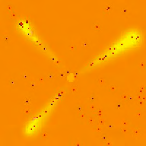
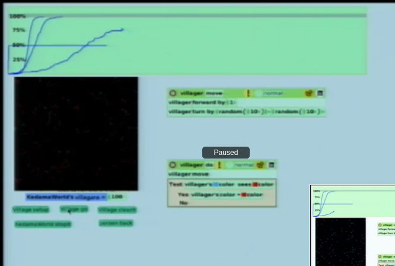

I'm really liking this tool….very interactive, although not quite as good as Bret Victor.
He excels at coming up with simple heuristics that give rise to the desired macro behavior with very few lines of code for the heuristics.
Alan Kay's Squeak Etoys software is a great virtual environment for playing around with things, although some say is limited? Seems you can work in a 3D interactive environment too, called Open Cobalt, and demoed really well by Kay here.
Timestamps from Heidelberg Lecture Video. Most demos are in etoys too and documented in rn2007006a_olpc.pdf
37:45. How is it only 5 rules???!?! >.< 
If I have no food and at perfume Then follow perfume If I have no food and at food Then pickup food, goto nest If I'm going to nest then drop perfume If I have food and at nest Then drop food, stop going to nest If otherwise then wander
“All particles rotate in a random direction and walk one step.” (from code)
Kay: “We are dispensing with the apparatus of mathematics that was used before computers. That's why children are able to do this. You don't need a differential equation<Brownian Motion to do this, you can just act it out”
| Spread of Infection | Diffusion | Gravity |
| 29:30. Touch = Infected. COOL PLOT! AIDS doesn't act fast (so administrators tend to forget about it), but everyone still dies, just the time constant is longer!  | 38:00 | Add gravity in… |
Source doc is m2010002_lobjects.pdf, but interactive at 40:08 and rules below:
If I have no before then goto upper left If I have a before then goto before's right side If I am at before's right side and am right of margin then tell my before If I'm told and can move then start newline otherwise tell my before
{kind=link}
{kind=link}
{kind=link}
{kind=link}
{kind=link}
{kind=link}
{kind=link}
{kind=link}